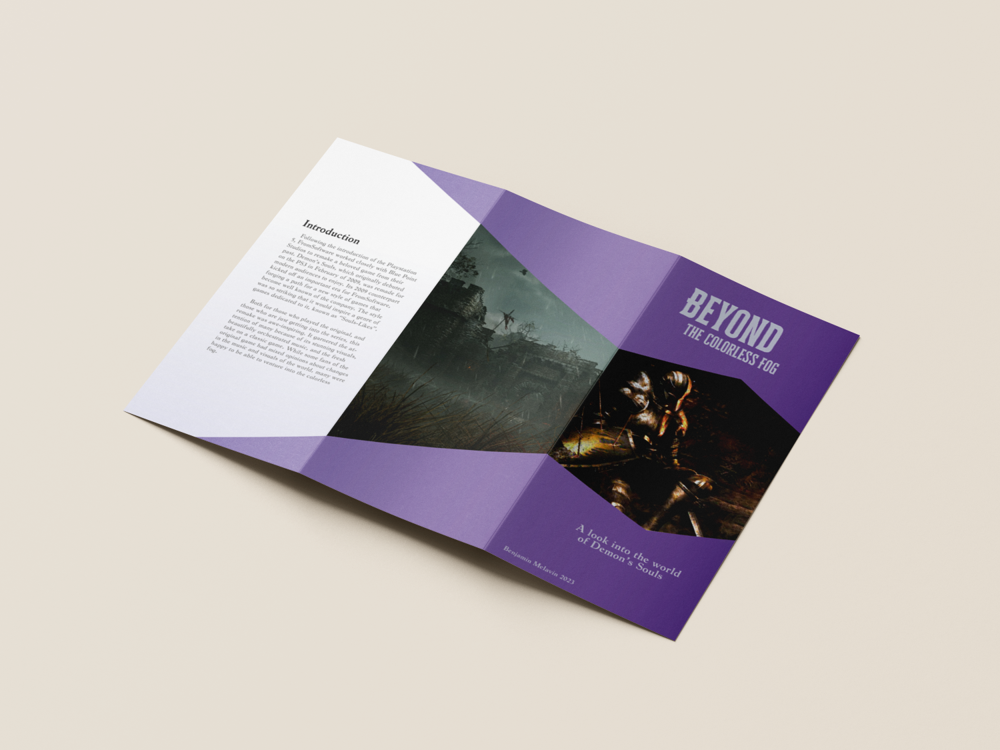

The Demon's Souls Remake is a game I hold very near and dear to my heart. I've spent hours playing it, and it has given me inspiration in many different design and artistic endeavors. To show my appreciation, I made a small brochure where I discuss the game and a little bit about its history. Ironically enough, this brochure too is a remake. The original was made back in 2020 during my first college design class, which you can see the original and its sketches below. I rewrote and redesigned the entire thing to show myself how far I've come since then, and partially because of how fitting the idea of making a remake about a remake was to me.